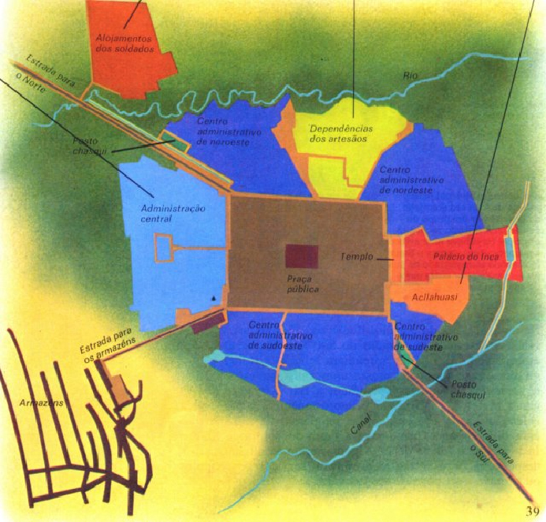

|
|
O
IMPÉRIO INCA
por Karoliny Aparecida
de Lima Borges
O
império inca foi um dos maiores impérios da América Latina e, foi
talvez o melhor exemplo de Império que já existiu, e mesmo não sendo
tão conhecido por sua escrita, como outros povos foram, ele é muito
conhecido por sua arquitetura, como por exemplo, Macho Pichu. A
etnia Inca, cuja origem é a cidade de Cuzco, realizou sua expansão,
dominando outras cidades e povos, sendo estes subjugados e obrigados
a jurar lealdade ao Imperador.
Esse
império dominou onde atualmente são o Equador, o Peru, a Colômbia e
o Chile. Sua capital foi Cuzco, uma cidade localizada onde hoje é o
Peru.
As
lendas e contos sobre ele duraram gerações, e resistiram à invasão
espanhola, que destruiu o império, mas não a
história.
Ruínas de Macho Pichu,
Peru. – O exemplo mais famoso de construção
Inca.
A LENDA DOS ANCESTRAIS E A CONFEDERAÇÃO
CUZQUENHA
Os
Incas tinham uma lenda sobre a formação de Cuzco, da vida de seu
patriarca, Ayar Manko ou Manko Kapaq. Essa lenda conta que de uma
gruta situada a mais ou menos 30km de Cuzco, saíram quatro irmãos:
Ayar Kachi, Ayar Uchu, Ayar Awka e Ayar Manko; que sem terra e
órfãos, perambularam por um longo tempo entre Tampekiro, Pallata e
Hayskisro, indo de um luga a outro em seu pequeno
acampamento.
O
mais velho, Ayar Kachi, voltou de Hayskisro para gruta e se tornou
uma divindade local (waka). O restante dos irmãos continuou até o
cume do monte Wanakawri, lá, Ayar Uchu se petrificou, enquanto Manko
Kapaq lançava um bastão de ouro em diversas direções a fim de
determinar o lugar que marcaria o fim de sua caminhada errante. O
bastão afundou-se nas terras de Wanaypata das quais Ayar Awka tomou
posse antes de se petrificar. Ficando sozinho, Manko estabeleceu-se
em Wanaypata e lá construiu a cidade de Cuzco, juntamente com sua
esposa e irmã.
Os
quatro irmãos viraram os ancestrais de quatro tribos que moravam na
região; Ayar Kachi era dos Sawasiray, Ayar Uchu dos Allkawisa, Ayar
Awka dos Mara e Manko Kapaq dos Incas.
Essas
quatro tribos se uniram e formaram a confederação cuzquenha. Os
Incas foram os últimos a entrarem na confederação, e quando entraram
ficaram em uma posição inferior e subordinada ao restante das
tribos; até mesmo a língua, que era o Kechwa, os incas absorveram,
sem, é claro, deixar sua língua que foi usada até mais ou menos o
século XVI.
As
terras da confederação cuzquenha eram divididas em duas: a Hanan e a
Hurin. A primeira era a parte considerada forte, ocupada pelas
tribos mais antigas, que exercia a parte política e ficava na parte
alta; a segunda era considerada fraca que tinha função militar e
ficava na parte baixa, ocupada pelas tribos mais novas.
Com
os sucessos militares dos incas, eles conseguiram se apoderar da
confederação, derrubando violentamente os povos do Hanan, e pegando
suas funções.
Os
incas conquistaram seus povos vizinhos do Equador até o Chile,
esses, eram considerados “bárbaros” pelos incas, que se alto
denominavam os únicos civilizados. Seu território tinha ao todo
950.000 km2, o que equivale à França, Itália, Suíça e
Benelux (Bélgica, Luxemburgo e Holanda) juntas. Ele ia de norte a
sul nas cordilheiras, e da floresta Amazônica até o oceano
Pacífico.
O TAWANTINSUYU
O
Tawantinsuyu era o nome dado ao Império Inca, seu significado é “As quatro terras”. Tawantin
significa o número quatro, e suyu terra.
A
divisão do Tawantinsuyu
era bem simples: pela
cidade de Cuzco passavam duas linhas imaginárias em diagonal: uma
que ia de noroeste para sudeste, e outra que ia de nordeste para
sudoeste dos seus domínios. Sendo assim, o Império ficava dividido
em quatro partes (suyus).
O
suyu do norte recebia o nome de Chicasuyu; o do sul era chamado
Kollasuyu; o do leste, Antisuyu, e o do oeste chamava-se Kuntinxuyu.
Cada suyu era considerado um Reino independente, sendo governado por
um Apu, que devia obediência ao imperador, chamado de Inca.
Os suyus eram divididos em províncias, como grandes estados.
Cada província era administrada por um governador, chamado Tukriquq.
Ele morava na cidade principal da província, que era dividida em
diversas regiões. Cada região tinha o governo de um kuraka, que era
o antigo chefe da etnia conquistada. As regiões eram divididas em
partes: podiam ser cidades ou aldeias. Geralmente eram aldeias, pois
havia poucas cidades, normalmente uma por região, na qual morava o
kuraka. Aldeias e cidades eram habitadas por ayllus, que eram um
conjunto de famílias. Os laços do ayllu eram indicados dos homens
pelo pai, e das mulheres pela mãe. Ou seja, a transmissão do nome se
fazia sempre e pai para filho e de mãe para filha; tradição que
acontecia principalmente na região próxima a
Cuzco.
No Tawantinsuyu não havia ninguém que não tivesse terra.
Quando alguém nascia, recebia das mãos do kuraka, um topo,
quantidade de terra considerada suficiente para sustentar uma
pessoa. Sendo assim, se a família fosse composta por três pessoas,
teria três topos, e assim por diante. Quando uma pessoa morria, seu
topo voltava para as mãos do kuraka, para que ele sempre
tivesse terras disponíveis para dar aos recém-nascidos. A riqueza de
uma família era indicada pela quantidade de pessoas que ela tivesse,
ou seja, quanto maior a família, mais terras e mais riqueza.
Na divisão do trabalho, a mulher ficava com os trabalhos de
cozinhar e cuidar da habitação; e o homem ficava com a lavoura, a
cerâmica e com a tecelagem. O casamento não poderia acabar, senão,
por algum motivo muito grave. E mesmo que alguns homens fossem
poligâmicos, no geral o casamento era
monogâmico.
As estradas (tampu) tinham um tipo de correio (chaski), que
era um sistema de comunicação extremamente preciso, que podia
percorrer 2.000km em menos de uma semana.
AS DIVISÕES
Os Wakas eram os sacerdotes da etnia Inca, e tinham entre si
diversos graus de hierarquia, sendo que o Grande Sacerdote era o
responsável pela transmissão do poder Imperial (ele entregava a
Maskapaicha uma franja escarlate que o soberano colocava no cabelo,
deixando-a cair sobre a testa) ao próximo Inka. Os
Kipukamayoqs eram os recenseadores do Tawantinsuyu, responsáveis não
apenas por contar a população, mas também por contar tudo: a
quantidade de ouro extraída de determinado lugar, madeira cortada,
comida produzida etc.
Organograma do Império
Inca
O IMPERADOR
O imperador se apresentava como um waqcha, que significa
“órfão e pobre”, não reconhecendo seus pais, pois seu pai era o Sol.
Após virar imperador, ele abdicava da herança e do seu parentesco.
Ele se casava com uma irmã que se tornava sua esposa principal.
Através disso, ele mostrava que não pertencia mais a sua antiga
família. Na verdade somente alguns imperadores fizeram
isso.
Quando ele morria, seus filhos começavam uma disputa interna
para obtenção do poder, suas mulheres e os filhos que não foram
escolhidos como Inka, mumificavam seu corpo e passavam a morar em
seu palácio, com a missão eterna de proteger o corpo. Se este fosse
profanado, ou destruído, a família deixaria de ser nobre. Em
contrapartida, o novo soberano, por ser wakcha, ou seja, pobre
também, recebe apenas o trono. Assim, tem que construir um novo
palácio, que viraria o lar de sua Panaka (famílias nobres do
Tawantinsuyu), de seu corpo pela eternidade.
As múmias dos imperadores tinham suas cabeças raspadas, para
que seus cabelos fossem colocados em estatuas suas, vestidas com
suas roupas, e expostas no templo do sol.
A PRINCIPAL
CIDADE
A sede do império inca era a cidade de Cuzco. Ela era
descrita pelos espanhóis como: “Repleta de palácios senhoriais, pois
nela não vivia qualquer pessoa pobre (...). A maioria das habitações
era feita de pedra (...)Há também muitas casas de tijolos, dispostas
em boa ordem, ao longo de ruas muito estreita, todas
pavimentadas(...).”
Mas Cuzco só se tornou assim depois de um reforma feita para
urbanizar a cidade. “A nova cidade” consistia numa miniatura do
Tawantinsuyu; era dividida em quatro partes. A mais bela construção
da cidade era o templo do sol, e além dele haviam mais quatro
templos: do raio, da lua e do arco-íris.
O templo do sol, posteriormente a reforma de Cuzco, teve seu
nome modificado para “lugar do ouro” (Coricancha), pois com a
reforma ele foi completamente coberto de ouro. Era dele que “saiam”
as linhas imaginárias que cortavam a cidade. O culto ao Deus Jaguar,
de Chavin (tribo que ocupava a área bem antes do império inca),
parece não ter sido esquecido ao longo do tempo, pois a reforma fez
com que Cuzco, passasse a ter a forma de um jaguar sentado sobre as
patas traseiras, olhando para o Antisuyu (parte leste do
império).
Cuzco também era a capital religiosa do império, onde, em
cada mês do ano, no calendário lunar, os incas faziam uma
celebração; múmias de kurakas eram conduzidas pelas ruas da cidade.
A celebração mais importante acontecia no solstício de verão e era a
celebração o sol (Intip raymin)
Quando
Wayna Kapak, o último imperador assumiu, ele transferiu a sede inca
para Tumipampa, sua cidade natal.
Plano
de uma típica cidade Inca
O SABER DOS
INCAS
Mesmo
os incas tendo muitas lendas e relatos sobre seus imperadores, eles
não tinham uma literatura
fixa; ela era transmitida oralmente. Isso era feito pelos amawta que
eram responsáveis por transmitir a cultura, as tradições Incas
antigas e a trajetória dos antepassados às próximas gerações. Eles
geralmente cercavam o imperador para que em sua more ele pudesse ser
“guardado na memória”.
O
calendário inca, como em outras civilizações era “movido” pela
astronomia.
Ele
se dividia em 12 meses lunares e um ano solar, que não coincidiam, o
solar tendo 10,9 dias a mais que o lunar. Como as festividades eram
contadas pelos meses lunares, os dias a mais eram divididos entre os
12 meses ou reunidos em um terceiro mês, colocado ao fim do terceiro
ano lunar.
O
sistema de contagem era muito parecido com um ábaco e se chamava
Kipu. Era com ele que os Kipukamayoqs faziam as contagens.
O kipu era formado por cinco fileiras de 4 casas, entre as
quais se distribuía cinco grãos de milho, um cordão medindo um pouco
mais de um metro, da onde saiam vários cordões com nós. A maneira de
se manusear um kipu só era conhecida pela própria pessoa que o fez,
ou para alguém que essa pessoa tenha passado esse conhecimento.
Os incas também desenvolveram a arquitetura (que por sinal é
muito famosa por causa de Macho Pichu) a cerâmica e a tecelagem, e
principalmente a metalurgia do ouro, do cobre e da prata; eram
conhecidos por seus vizinhos como “mestre dos
metais”.
A QUEDA DO
IMPÉRIO
Com a morte de Wayna Kapaq, em 1528, se iniciou mais uma vez
uma disputa entre os filhos. Seu filho Ataw Wallpa detinha o apoio
das forças do norte (Hanan), enquanto Waskarr, o outro filho, tinnha
o apoio do sul (Hurin).
Na mesma época, uma expedição espanhola, liderada por
Francisco Pizarro, explorava a costa peruana. A expedição foi
encarada pelos aliados de Waskarr como uma ajuda divina. Pizarro
prometeu ajudar as tropas de Waskarr.
Ataw Wallpa não tinha medo dos espanhóis, pois eles eram só
200 homens, havia somente curiosidade. Quando Pizarro tomou
Cajamarca, ele mandou seu irmão Hernando Pizarro até Quito para se
encontrar com Wallpa.
O príncipe pensou que conseguiria espantar os espanhóis
usando uma roupa sagrada, então foi para Cajamarca encontrar com
Pizarro. Quando entrou na cidade ela parecia vazia, somente com
Pizarro na praça central; o príncipe estava acompanhado de mais ou
menos 300 índios. Os índios ficaram assustados quando Pizarro
ordenou que soltassem os cachorros e que começassem a atirar; vários
foram pisoteados, mordidos ou então fugiram; Pizarro levou Wallpa,
arrastando-o pelo braço, mostrando que não havia nada em sua “roupa
sagrada”.
O exército de Wallpa conseguiu ganhar o poder do império, mas
seu líder estava sob o poder espanhol. Os próprios kurakas fizeram
pressão para que Wallpa fosse executado, com medo de que ficassem
novamente submissos ao império. Pizarro sucumbiu à pressão, e
condenou Ataw Wallpa a morte no dia 29 de agosto de
1533.
Todas as etnias andinas comemoraram a morte do imperador,
menos os Incas, que logo após receberem a noticia, nomearam o novo
imperador: Manko Inka.
No dia 15 de novembro Pizarro chegou a Cuzco, o novo
imperador recebeu os invasores nas portas de Cuzco e, em troca do
apoio estrangeiro ao seu governo, ajudou Pizarro a aniquilar as
tropas dispersas de Atawallpa. Contudo, esta campanha não foi muito
rápida e durou dois longos anos. Passados os dois anos, os espanhóis
fundaram a cidade de Lima, que viraria a capital da colônia e
serviria de base para o restante das tropas
espanholas.
O imperador era mantido em cativeiro dentro de seu palácio em
Cuzco, e alguns soldados espanhóis o humilhavam na frente de seus
seguidores pessoais, obrigando-o a beber urina a dos soldados e
comer a comida em que haviam cuspido. Não só Manko Inka, mas todo o
seu povo também se sentia humilhado.
Manko logo percebeu que Pizarro tinha um rival: Diego de
Almagro, que essa rivalidade poderia ajudá-lo. Manko Inka começou a
falar insistentemente a Almagro sobre as riquezas fabulosas que
encontraria numa cidade que se localizava no extremo sul do Império
(onde atualmente é o Chile) e que seria repleta de construções
edificadas em
ouro. Almagro acreditou na história, e em janeiro
de 1536 juntou suas tropas e partiu levando como guia Pawlu, irmão
de Manko, em busca da tal cidade de ouro, que batizara por conta
própria de Eldorado.
Pawlu guiou a expedição pela Cordilheira dos Andes. Só na
viagem de ida, mais da metade das fileiras de Almagro não resistiu.
O próprio Almagro, que começava a manifestar os sintomas de sífilis,
piorou muito no frio dos Andes. Depois de Cuzco, o imperador tomou
Sacsahuman. Por onde seus homens passavam, cavavam fossos no chão
para impedir o avanço das cavalarias espanholas. Hernando
Pizarro até conseguiu retomar Cuzco, mas perdeu praticamente todos
os seus homens num ataque precipitado a Ollantaytambo, base de Manko
Inka. Francisco Pizarro mandou duas tropas, que foram vencidas, o
que aconteceu com mais outras três.
Manko aprisionou os espanhóis e matou os índios que os
ajudaram. Depois de um tempo montou uma cavalaria e uma força
armada. Manko tentou tomar Lima, mas não conseguiu. Perto da
floresta amazônica, Manko Inka formou a cidade de Vitcos, capital do
“novo império” inca.
Almagro voltou para o Peru, com seu exército dizimado. Pawlu
havia virado seu amigo confirmou que a estória sobre o “El dorado”
era falsa. Ele foi nomeado por Almagro como o novo imperador, o que
dividiu as tropas incas. Almagro também dividiu as tropas
espanholas, e quando morreu Pawlu se aliou a Pizarro sendo
reconhecido por ele e pela coroa espanhola como o novo
imperador.
Durante nove anos, Manko Inka tentou sem sucesso tomar o vale
de Mantaro, região controlada pelos Wanka que eram os principais
aliados dos espanhóis, sendo que essas tentativas destruíram seu
exército. Manko Inka concluiu que o melhor a fazer seria tentar um
diálogo pacífico com os invasores. Em 1545 os próprios partidários
de Manko Inka, provavelmente julgando-o traidor, apunhalaram-no
pondo fim a sua vida.
O filho de Manko que havia sido escolhido para ser o novo
imperador deserdou e se tornou o primeiro soberano inca a se tornar
católico. Outro imperador foi escolhido, e esse também se converteu
ao catolicismo, logo depois morreu, e como o frei que tentou curá-lo
não conseguiu, esse foi assassinado.
Em 1569, assumiu o Peru o Vice-Rei Francisco de Toledo, que
teve a paciência esgotada com o assassinato do frei Diego Ortiz.
Reuniu uma força muito grande e ele liderou, tomou Vitcos e capturou
Tupac Amaru, que tentava se refugiar na floresta, mas fora
alcançado. Levando o imperador para Cuzco, ele julgou-o e
condenou-o. Toledo executou Tupac Amaru com a decapitação em maio de
1572.
A morte de Tupac Amaru colocou um ponto final
na linhagem dos unificadores de terras e de povos que haviam
dominado os Andes inteiros e cuja fama alcançava a toda a América do
Sul, sendo hoje comparados na Europa aos Romanos.
LINHA
DO TEMPO:
|
Imperador
(Inka) |
Tempo
de governo |
Feitos
|
|
Manko
Kapaq (Ayar Manko) |
<1300 a
1320> |
Segundo
a lenda fundou a cidade de Cuzco. |
|
Sinchi
Roka |
<1320 a
1335> |
Não
teve muito poder dentro da Confederação Cuzquenha. Seu governo
foi longo, mas não foi realmente importante no que diz
respeito à história Inca. |
|
Lloki
Yupanki |
<1335 a
1355> |
Não
fez nada além do que seus dois anteriores fizeram. Como eles,
Lloki Yupanki seguiu as ordens de Hanan e garantiu o direito
do povo Inka a prestar culto a Intip no
Intipcancha |
|
Mayta
Kapaq
|
<1355 a
1375> |
Tão
importante quanto seus antecessores. Fez campanhas militares
para saquear os povoados vizinhos |
|
Kapaq
Yupanki |
<1375 a
1385> |
Ele
foi o último Inka de Hurin a ser submisso a Hanan. O poder
militar adquirido por Hurin, colocava a metade outrora fraca e
pobre em condições de contestar o domínio dos sacerdotes de
Hanan sobre a Confederação
Cuzquenha. |
|
Inka
Roka
|
<1385 a
1415> |
Reuniu
soldados e liderou uma expedição que atacou e dominou as
tribos formadoras de Hanan. Levou a estátua de Manko Kapaq
para a parte de cima da cidade, obrigando os antigos
dominadores a reverenciarem a Intip e Manko Kapaq. Acumulou as
funções das três tribos e unificou-as sob seu
domínio. |
|
Yawarr
Waqaq |
<1415 a
1417> |
Seu
único feito relevante foi a perda de todos os territórios que
Inka Roka havia anexado. Foi assassinado dois anos depois por
conspiradores. |
|
Wiraqocha
Inka |
<1418 a
1438> |
Apaziguou
as revoltas internas, deteve as tentativas de invasão e
iniciou a expansão de Cuzco anexando diversas regiões
próximas, num raio de 40km. |
|
Pachakuti
Inka Yupanki (Cusi Yupanki) |
<1438 a
1470> |
Defendeu
Cuzco dos Chanka. Depois de ser sagrado Inka, Pachakuti não
parou a expansão de seus domínios. |
|
Tupa
Inka Yupanki ou Tupa Yupanki |
<1470 a
1493> |
Fez
de seu reinado uma sucessão de guerras, com as quais ampliou
seus domínios.Tomou vários povos, e
territórios. |
|
Wayna
Kapaq |
<1495 a
1528> |
Wayna
Kapaq foi o último Inka antes da chegada dos espanhóis.
Transferiu
a capital do Tawantinsuyu de Cuzco para Tumipampa. Um dos
lideres mais adorados. |
|
***** |
<1528 a
1532> |
Luta
pela posse do império, eChegada dos
espanhóis. |
|
Atawallpa |
<1532 a
1533> |
Ganhou
o poder do império, mas não conseguiu governa-lo, pois estava
sob domínio espanhol. |
|
Manko
Inka |
<1533 a
1545> |
Se
revoltou contra os espanhóis e fundou a cidade de Vitcos. Foi
assassinado por o considerarem
traidor |
|
Sayri
Tupaq |
<1545 a
1555> |
Foi
o primeiro soberano (apesar de já ter deixado de sê-lo quando
tal fato ocorreu) a se converter ao
Catolicismo. |
|
Titu
Cusi Yupanki |
<1555 a
1571> |
Também
se converteu ao catolicismo, logo depois morreu, e como o frei
que tentou curá-lo não conseguiu, esse foi
assassinado. |
|
Tupac
Amaru |
<1571 a
1572> |
Teve
o reinado mais curto. Foi o ultimo de sua linhagem. Morreu
decapitado. | |